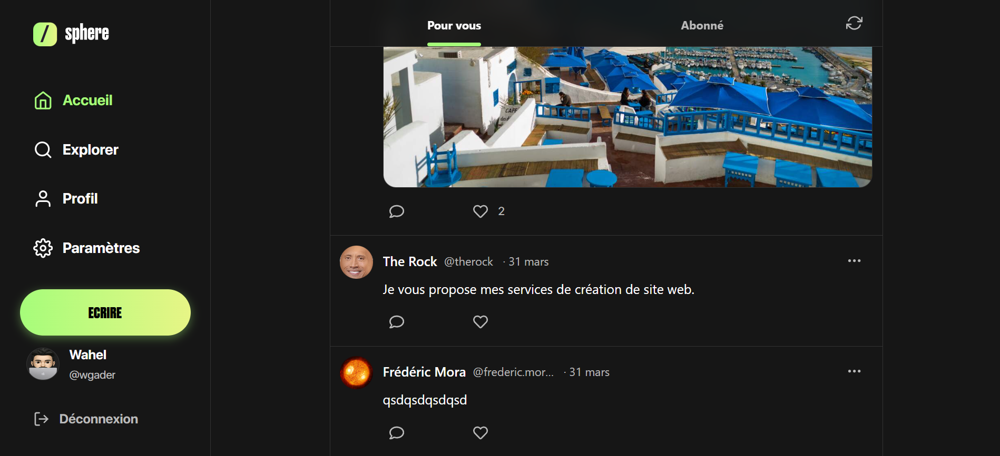
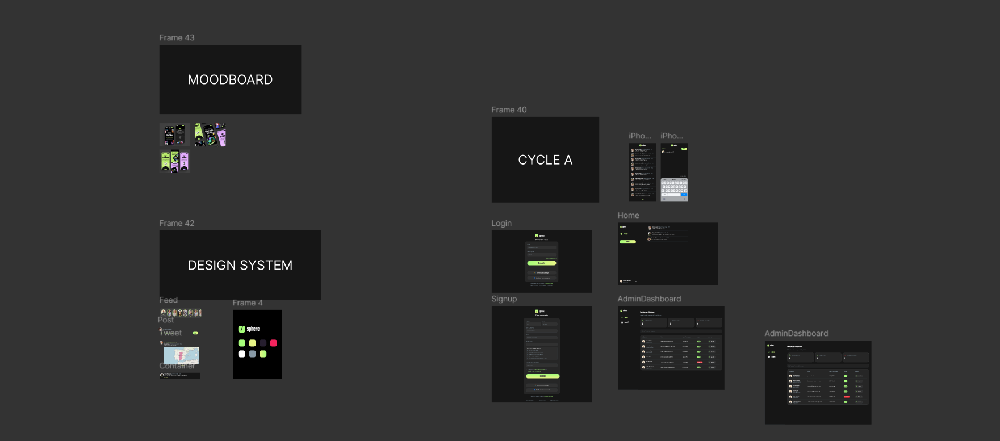
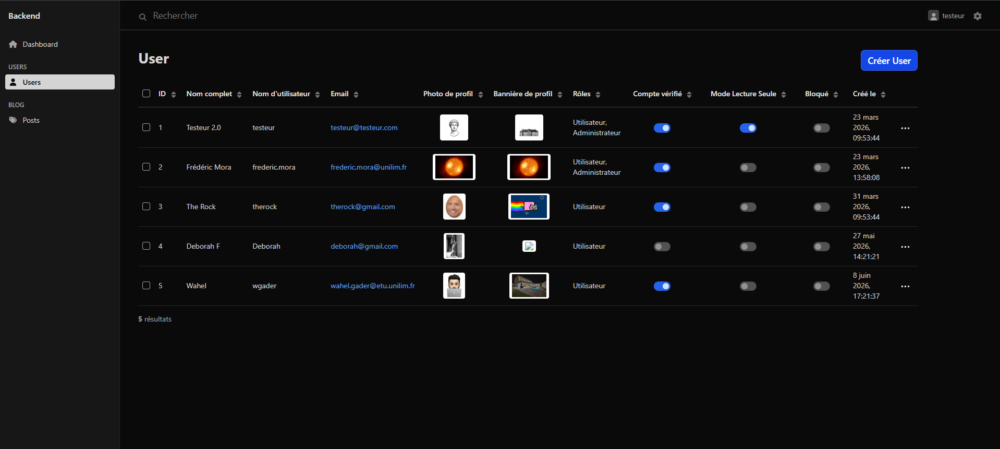
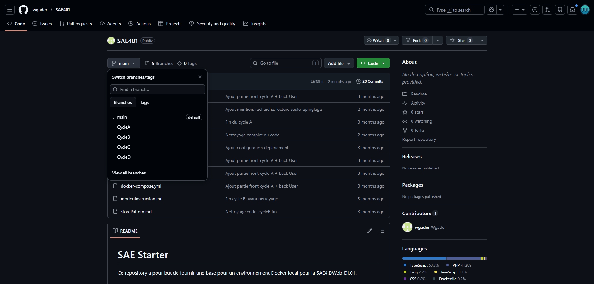

SAE 4.01 : Développer pour le web
Réalisée en mars-avril 2026
Objectifs
- Concevoir et développer une application web complète, individuellement, en cinq semaines
- Mettre en place un back office pour la gestion des données et une interface client riche
- Veiller à la sécurité, à la performance et à l'hébergement de l'application
- Travailler en méthode itérative, avec validation par cycle avant de passer au suivant

Présentation du projet
Pour cette SAE, le sujet était de créer mon propre réseau social, à la manière de Twitter ou Instagram. J'ai appelé le mien Sphere. Côté technique, le projet imposait l'utilisation de Symfony en back, avec Doctrine pour la persistance MySQL, et React + TypeScript + Tailwind en front. Le tout dans des conteneurs Docker. Le back office d'administration devait être réalisé avec EasyAdmin.
Le projet était organisé en cycles (de A à G), chacun regroupant plusieurs itérations. Chaque cycle devait être hébergé, testé et validé par le professeur avant de passer au suivant.
Charte graphique et maquettage
Avant de coder, j'ai posé une identité visuelle sur Figma : un mode sombre dominant, un vert lime en accent, et la typographie Anton pour le wordmark. J'ai ensuite maquetté chaque cycle avant de le développer, ce qui m'a évité de revenir trois fois sur la même fonctionnalité. Cette phase m'a permis de mobiliser la ressource R4.03 Design d'expérience.

Développement Front
J'ai développé toute la partie cliente en React + TypeScript avec Tailwind. J'ai utilisé React Router DOM pour gérer les routes en client-side rendering, et découpé l'interface en composants réutilisables (Tweet, Avatar, Modal, etc.). L'application est entièrement responsive : sur desktop la sidebar est complète, sur mobile elle bascule en barre de navigation en bas d'écran.
Je pense ainsi avoir validé l'AC24.01 - Produire des pages et applications Web responsives, en mobilisant la ressource R4.06 Développement front.
Développement Back et API
Le back est constitué de deux parties. D'un côté, une API REST en Symfony qui dialogue avec le front en JSON (authentification, posts, likes, abonnements). De l'autre, un back office d'administration monté avec EasyAdmin pour gérer les comptes, les contenus, et la modération. Doctrine gère la persistance vers MySQL.
Cette partie m'a permis de valider l'AC24.02 - Mettre en place ou développer un back office et l'AC24.04 - Modéliser les traitements d'une application web, en mobilisant la ressource R4.07 Développement back.

Sécurité et authentification
Une bonne partie des itérations était centrée sur la sécurité des comptes : politique de mot de passe robuste, confirmation par email avant connexion, réinitialisation par lien à durée limitée, mode compte privé avec validation des abonnés, et suppression de compte. Cela m'a fait travailler la sécurité des systèmes et des données.
Hébergement et optimisation
À la fin de chaque cycle validé, je devais héberger ma version sur le serveur mmi.unilim.fr. J'ai déployé le front buildé avec Vite et le back Symfony via FileZilla et SSH. J'ai aussi optimisé le chargement (compression des images, minification du JS/CSS, lazy-loading), et je suis monté à un bon score Lighthouse en performance.
Je valide ici l'AC24.05 - Optimiser une application web et l'AC24.06 - Configurer une solution d'hébergement adaptée aux besoins, en m'appuyant sur la ressource R4.08 Déploiement de services.
Gestion de projet et itération
Le découpage en cycles m'a vraiment poussé à travailler en itératif. Tout est passé par GitHub, avec une branche par cycle (Cycle-x) et un merge dans la branche main une fois tout validé. Cette méthode m'a permis de garder un historique propre et de ne jamais lancer le cycle suivant si l'actuel n'était pas 100% fonctionnel. Le fait de devoir présenter mon travail au professeur à la fin de chaque cycle m'a aussi fait travailler les codes des productions professionnelles.
Cela me permet de valider l'AC25.01 - Gérer un projet avec une méthode d'amélioration continue et l'AC25.05 - Maîtriser les codes des productions écrites et orales professionnelles.

Bilan
Cette SAE est de loin le projet le plus complet que j'ai mené depuis le début du BUT. J'ai énormément progressé sur Symfony et sur l'architecture API REST + front React, deux choses que je ne maîtrisais pas vraiment avant. Le découpage en cycles m'a aussi appris une chose importante : finir une fonctionnalité proprement vaut mieux que d'en commencer trois à moitié. Sphere n'est pas parfaite, certaines parties mériteraient d'être réécrites, mais le résultat est fonctionnel, hébergé, et c'est un projet sur lequel je pourrai m'appuyer pour la suite, que ce soit en troisième année ou pour mes prochains stages.
Liens du projet
Compétences développées
Produire des pages et applications Web responsives
Mettre en place ou développer un back office
Modéliser les traitements d'une application Web
Optimiser une application web en termes de référencement et de temps de chargement
Configurer une solution d'hébergement adaptée aux besoins
Gérer un projet avec une méthode d'amélioration continue (par exemple une méthode agile)
Maîtriser les codes des productions écrites et orales professionnelles